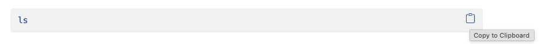

Unix Shell Workshop
2026-02-25
Workshop Overview
Master the Unix shell (Bash) to:
- Navigate your file system efficiently
- Create, copy, move, and delete files and directories
- Combine commands with pipes and filters
- Automate repetitive tasks with loops
- Write and execute shell scripts
- Search files and text patterns
Prerequisites
Step 1: Download Files
Download shell-lesson-data.zip and move it to your Desktop.
Step 2: Extract the Archive
Unzip/extract the file. You should end up with a new folder called:
shell-lesson-data on your Desktop
Step 3: You’re Ready!
All data files will be in this directory for use throughout the workshop.
Workshop Structure
| Episode | Topic |
|---|---|
| 1 | Introducing the Shell |
| 2 | Navigating Files and Directories |
| 3 | Working With Files and Directories |
| 4 | File Permissions |
| 5 | Pipes and Filters |
| 6 | Loops |
| 7 | Shell Scripts |
| 8 | Finding Things |
| 9 | AWK for Text Processing |
Before We Begin…
You can copy any command directly from the slides by clicking the clipboard icon on the right-hand side of each code block. Then paste it straight into your terminal.
Episode 1: Introducing the Shell
Questions
- What is a command shell and why would I use one?
Objectives
- Explain how the shell relates to the keyboard, the screen, the operating system, and users’ programs.
- Explain when and why command-line interfaces should be used instead of graphical interfaces.
Why Use the Shell?
The Problem with GUIs
Imagine: Copy the 3rd line from 1,000 text files across 1,000 folders into one file.
Using a GUI:
- Hours of clicking
- High chance of error
- Repetitive and tedious
Using the Shell:
- A few commands
- Repeatable
- Fast and accurate (seconds!)
What is the Shell?
- A program that reads commands you type
- A command-line interface (CLI) - text-based
- Also a scripting language for automation
- Allows combining simple programs into powerful workflows
- The default way to interact with servers and supercomputers
Bash: The Shell We’re Using
Bash = Bourne Again SHell
- Most popular Unix shell
- Default on macOS, Linux, and Windows (via Git Bash)
- The standard for shell scripting
- Small number of “words” (commands) gets you far!
The Prompt
When you open the shell, you see:
or
The prompt indicates the shell is waiting for input.
Typing Commands
- Type a command after the
$/% - Press Enter to execute
- Results appear below
- Never type the
$/%- it’s just the prompt!
Example: Your First Command
lsis short for listing.- This command will list the contents of the current directory:
Nelle’s Pipeline: A Typical Problem
🧪 The Scenario
Nelle Nemo, a marine biologist, has:
- 🌊 Returned from a 6-month North Pacific Gyre survey
- 🧫 Collected 1520 samples
- 🧬 Measured 300 proteins per sample
- 💻 Needs to process all files using
goostats.sh - 📝 Must submit her paper by the end of the month
Nelle’s Pipeline: A Typical Problem
🚨 The Challenge
If Nelle runs goostats.sh manually (GUI):
- Open & process 1520 files
- ⏱ 30 seconds per file
- 🕒 12+ hours of manual work
- ❌ Time lost that could be spent writing her paper
Nelle’s Pipeline: A Typical Problem
💡 The Solution: Use the Shell
With a command shell, Nelle can:
- Automate repetitive processing
- Use loops to iterate over files
- Run the pipeline once and reuse it
- Let the computer work while she writes
Nelle’s Pipeline: A Typical Problem
🛠 Skills Nelle Needs
To build her pipeline, she must know how to:
- Navigate to a file/directory
- Create a file/directory
- Check the length of a file
- Chain commands together
- Retrieve a set of files
- Iterate over files
- Run a shell script containing her pipeline
Episode 2: Navigating Files and Directories
Questions
- How can I move around on my computer?
- How can I see what files and directories I have?
- How can I specify the location of a file or directory on my computer?
Objectives
- Explain the similarities and differences between a file and a directory.
- Translate an absolute path into a relative path and vice versa.
- Construct absolute and relative paths that identify specific files and directories.
- Use options and arguments to change the behaviour of a shell command.
- Demonstrate the use of tab completion and explain its advantages.
The File System
Files = store information
Directories (folders) = store files or other directories
The File System Tree
/ (root)
├── bin
├── data
├── Users
│ └── nelle
├── tmp
└── ...The root directory is / - everything else is inside it.

What these folders mean
bin= built-in programs and commandsdata= miscellaneous data filesUsers= user home directories (e.g.,/Users/nelle)tmp= temporary files that don’t need long-term storage
pwd - Print Working Directory
Where are you right now?
This shows your current working directory (your current location).
Your Home Directory
The shell usually starts in your home directory:
- macOS:
/Users/username - Linux:
/home/username - Windows:
C:\Users\username
ls - List Files and Directories
What’s in your current location?
Making ls Output Clearer
Use the -F flag to mark file types:
Note
/after name = directory*after name = executable file@after name = symbolic link- No marker = regular file
Clearing Your Terminal
If your screen gets cluttered:
You can still access previous commands using ↑ and ↓ to move line-by-line, or by scrolling in your terminal after clear -x.
For some Bash configurations, clear may also clear the scrollbuffer
Tip
Shortcut: Press Ctrl+L to clear the screen.
Getting Help
There are two common ways to learn command options:
--help(Linux and Git Bash)
man(Linux and macOS)
Press q to quit the manual.
Tip
Built-in commands: If man cd fails, try help cd instead.
The --help Option
--help option displays more information on how to use the command or program.
Usage: ls [OPTION]... [FILE]...
List information about the FILEs (the current directory by default).
Sort entries alphabetically if neither -cftuvSUX nor --sort is specified.
Mandatory arguments to long options are mandatory for short options, too.
-a, --all do not ignore entries starting with .
-A, --almost-all do not list implied . and ..
--author with -l, print the author of each file
-b, --escape print C-style escapes for nongraphic characters
--block-size=SIZE scale sizes by SIZE before printing them; e.g.,
'--block-size=M' prints sizes in units of
1,048,576 bytes; see SIZE format below
-B, --ignore-backups do not list implied entries ending with ~
-c with -lt: sort by, and show, ctime (time of last
modification of file status information);
with -l: show ctime and sort by name;
otherwise: sort by ctime, newest first
-C list entries by columns
--color[=WHEN] colorize the output; WHEN can be 'always' (default
if omitted), 'auto', or 'never'; more info below
-d, --directory list directories themselves, not their contents
-D, --dired generate output designed for Emacs' dired mode
-f do not sort, enable -aU, disable -ls --color
-F, --classify append indicator (one of */=>@|) to entries
... ... ...Short vs Long Options
Use short options when typing commands into the shell to minimize keystrokes and get your task done faster:
Use long options in scripts for clarity:
Unsupported Command Options
If you use an option the command doesn’t support, you’ll see an error:
The man command
This command will turn your terminal into a page with a description of the ls command and its options.
To navigate through the man pages,
- use ↑ and ↓ to move line-by-line
- try b and Spacebar to skip up and down by a full page.
- use / followed by the character or word you are searching for to find it in the manual.
- Sometimes a search will result in multiple hits. If so, you can move between hits using N (for moving forward) and Shift+N (for moving backward).
- press q to quit the manual and return to the command prompt.
Manual pages on the web
- The third way to access help for commands is to search for the manual page on the web.
- When using internet search, including the phrase
unix man pagein your search query will help to find relevant results.
Challenge
Exploring More ls Options
You can also use two options at the same time. What does the command ls do when used with the -l option? What about if you use both the -l and the -h option?
Solution
Solution
The -l option makes ls use a long listing format, showing not only the file/directory names but also additional information, such as the file size and the time of its last modification. If you use both the -h option and the -l option, this makes the file size ‘human readable’, i.e. displaying something like 5.3K instead of 5369.
Challenge
Listing in Reverse Chronological Order
By default, ls lists the contents of a directory in alphabetical order by name. The command ls -t lists items by time of last change instead of alphabetically. The command ls -r lists the contents of a directory in reverse order. Which file is displayed last when you combine the -t and -r options? Hint: You may need to use the -l option to see the last changed dates.
Solution
Solution
The most recently changed file is listed last when using -rt. This can be very useful for finding your most recent edits or checking to see if a new output file was written.
Exploring Other Directories
List contents of the Desktop directory:
Note that if a directory named Desktop does not exist in your current working directory, this command will return an error.
cd - Change Directory
Move to a different location
Notice: cd produces no output, but pwd confirms you moved!
Moving Into Subdirectories
Go deeper into the file structure:
Listing Current Directory
Check what’s here:
Moving Up One Level: ..
To go to the parent directory (one level up):
.. = “the directory containing this one”
Current Directory: .
To refer to the current directory:
This lists the current directory (same as just ls -F).
Special Symbols in Paths
| Symbol | Meaning |
|---|---|
/ at start |
Root directory |
/ between names |
Path separator |
.. |
Parent directory |
. |
Current directory |
~ |
Home directory |
- |
Previous directory |
Hidden Files and Directories
The special directory .. doesn’t usually show up when we run ls. To display it, add the -a option:
Other Hidden Files
Note
In addition to .. and ., you may see files like .bash_profile or .gitignore.
- These files usually contain shell configuration settings
- The prefix
.prevents them from cluttering the terminal - Use
ls -ato see them - Multiple options can be combined:
ls -F -a=ls -Fa
Two Types of Paths
Absolute Path
- Starts with
/ - Works from anywhere on the computer
- Example:
/Users/nelle/Desktop/shell-lesson-data
Relative Path
- Does not start with
/ - Depends on where you are now
- Example:
Desktop/shell-lesson-data
Home Directory Shortcut
Use ~ to mean your home directory:
Return to Home
cd with no arguments returns to home:
Navigate Back and Forth
Go to previous directory with -:
Great for switching between two locations!
Tab Completion
Save typing! Use Tab to auto-complete:
Type: ls nor then press Tab
Becomes:
If multiple options, press Tab twice to see all.
General Syntax of a Shell Command
We have now encountered commands, options, and arguments.
Consider this example:

Challenge
Absolute vs Relative Paths
Starting from /Users/nelle/data, which of the following commands could Nelle use to navigate to her home directory, which is /Users/nelle?
cd .cd /cd /home/nellecd ../..cd ~cd homecd ~/data/..cdcd ..
Solution
Solution
- No:
.stands for the current directory. - No:
/stands for the root directory. - No: Nelle’s home directory is
/Users/nelle. - No: this command goes up two levels, i.e. ends in
/Users. - Yes:
~stands for the user’s home directory, in this case/Users/nelle. - No: this command would navigate into a directory
homein the current directory if it exists. - Yes: unnecessarily complicated, but correct.
- Yes: shortcut to go back to the user’s home directory.
- Yes: goes up one level.
Challenge
Relative Path Resolution
Using the filesystem diagram below, if pwd displays /Users/thing, what will ls -F ../backup display?
../backup: No such file or directory2012-12-01 2013-01-08 2013-01-272012-12-01/ 2013-01-08/ 2013-01-27/original/ pnas_final/ pnas_sub/

Solution
Solution
- No: there is a directory
backupin/Users. - No: this is the content of
Users/thing/backup, but with.., we asked for one level further up. - No: see previous explanation.
- Yes:
../backup/refers to/Users/backup/.
Challenge
Solution
Solution
- No:
pwdis not the name of a directory. - Yes:
lswithout directory argument lists files and directories in the current directory. - Yes: uses the absolute path explicitly.
Nelle’s Pipeline: Organizing Files
Nelle is ready to organize the files from the protein assay machine.
- Creates directory
north-pacific-gyrefor her data - Each sample has a unique 10-character ID (e.g.,
NENE01729A) - Files named like
NENE01729A.txt,NENE01812A.txt, etc. - All 1520 files in the same directory
Using Tab Completion
Nelle can see her files:
But that’s a lot to type! She can use tab completion:
- Type
ls norand press Tab - Shell completes to
ls north-pacific-gyre/ - Pressing Tab again shows multiple files
- Type
ls north-pacific-gyre/gooand press Tab for files starting with “goo”
Episode 3: Working With Files and Directories
Questions
- How can I create, copy, and delete files and directories?
- How can I edit files?
Objectives
- Delete, copy and move specified files and/or directories.
- Create files in that hierarchy using an editor or by copying and renaming existing files.
- Create a directory hierarchy that matches a given diagram.
Creating Directories
We now know how to explore files and directories, but how do we create them?
Where Are We?
First, check where we are:
Move to exercise-data/writing and see what’s there:
Creating a Directory
Create a new directory called thesis:
mkdir means “make directory”
Check it was created:
Verify the Directory is Empty
Since we just created it:
No output means the directory is empty.
Creating Nested Directories
The -p option creates nested subdirectories in one operation:
Use ls -FR to recursively list the new hierarchy:
Two Ways of Doing the Same Thing
Note
Using the shell to create a directory is no different than using a file explorer.
If you open the current directory using your operating system’s graphical file explorer, the thesis directory will appear there too.
The shell and the file explorer are two different ways of interacting with the files, but the files and directories themselves are the same.
Good Names for Files and Directories
Tip
Tips for naming files and directories:
Don’t use spaces - Use
-or_instead- Good:
north-pacific-gyre/ - Bad:
north pacific gyre/
- Good:
Don’t begin with
-- Commands treat these as optionsStick with: lowercase letters, numbers,
.,-,_- Many special characters have special meanings
Spaces and Special Characters
If you need to refer to names with spaces or special characters, surround the name in quotes:
Best practice:
- Use all lowercase letters
- Windows and macOS are typically case insensitive
- Can’t distinguish between
thesisandThesisin same directory
Creating a Text File
Change to thesis directory and create a file with nano:
nano is a simple text editor that runs in your terminal.
Which Editor?
Using nano
Type some text,

Then,
- Press Ctrl+O to write data to disk
- Press Return to accept filename
draft.txt - Press Ctrl+X to quit and return to shell
Control Key Notation
Tip
The Control key can be described in various ways:
Control-X,Control+XCtrl-X,Ctrl+X^XC-x
In nano, the bottom shows: ^G Get Help ^O WriteOut
This means Ctrl+G for help, Ctrl+O to save.
Verify File Creation
nano doesn’t leave output, but ls confirms the file exists:
Challenge
Solution
Solution
The
touchcommand generates a new file calledmy_file.txtin your current directory. You can observe this newly generated file by typinglsat the command line prompt.my_file.txtcan also be viewed in your GUI file explorer.When you inspect the file with
ls -l, note that the size ofmy_file.txtis 0 bytes. In other words, it contains no data. If you openmy_file.txtusing your text editor it is blank.Some programs do not generate output files themselves, but instead require that empty files have already been generated. When the program is run, it searches for an existing file to populate with its output. The
touchcommand allows you to efficiently generate a blank text file to be used by such programs.
To avoid confusion later on, we suggest removing the file you’ve just created before proceeding with the rest of the episode, otherwise future outputs may vary from those given in the lesson. To do this, use the following command:
What’s In A Name?
Note
Most file names are something.extension:
.txt= plain text file.pdf= PDF document.cfg= configuration file.png= PNG image
Important: This is just a convention! Files contain bytes. Naming whale.png as whale.mp3 doesn’t make it a sound file - it might just confuse programs trying to open it.
Moving Files and Directories
Return to the writing directory:
draft.txt isn’t a very informative name. Let’s rename it using mv:
How mv Works
mv [old] [new] moves or renames files
Check the result:
Warning: mv will silently overwrite existing files with the same name!
Use mv -i or mv --interactive to ask for confirmation before overwriting.
Moving to Current Directory
Move quotes.txt to the current working directory:
The . means “current directory”
Verify thesis is now empty:
Confirming File Location
Try to list the file in thesis:
Confirm it’s in current directory:
Challenge
Moving Files to a new folder
After running the following commands, Jamie realizes that she put the files sucrose.dat and maltose.dat into the wrong folder. The files should have been placed in the raw folder.
Fill in the blanks to move these files to the raw/ folder (i.e. the one she forgot to put them in)
Solution
Copying Files and Directories
The cp command copies instead of moving:
ls can take multiple paths to show multiple files at once.
Copying Directories
Use the -r (recursive) option to copy directories:
Check both directories:
Forgetting -r When Copying Directories
If you omit -r when copying a directory:
The -r flag is required to copy directories.
Challenge
Renaming Files
Suppose that you created a plain-text file in your current directory to contain a list of the statistical tests you will need to do to analyze your data, and named it statstics.txt
After creating and saving this file you realize you misspelled the filename! You want to correct the mistake, which of the following commands could you use to do so?
cp statstics.txt statistics.txtmv statstics.txt statistics.txtmv statstics.txt .cp statstics.txt .
Solution
Solution
- No. While this would create a file with the correct name, the incorrectly named file still exists in the directory and would need to be deleted.
- Yes, this would work to rename the file.
- No, the period(.) indicates where to move the file, but does not provide a new file name; identical file names cannot be created.
- No, the period(.) indicates where to copy the file, but does not provide a new file name; identical file names cannot be created.
Challenge
Moving and Copying
Solution
Solution
We start in the /Users/jamie/data directory, and create a new folder called recombined. The second line moves (mv) the file proteins.dat to the new folder (recombined). The third line makes a copy of the file we just moved. The tricky part here is where the file was copied to. Recall that .. means ‘go up a level’, so the copied file is now in /Users/jamie. Notice that .. is interpreted with respect to the current working directory, not with respect to the location of the file being copied. So, the only thing that will show using ls (in /Users/jamie/data) is the recombined folder.
- No, see explanation above.
proteins-saved.datis located at/Users/jamie - Yes
- No, see explanation above.
proteins.datis located at/Users/jamie/data/recombined - No, see explanation above.
proteins-saved.datis located at/Users/jamie
Removing Files and Directories
Return to the writing directory and remove quotes.txt:
Confirm it’s gone:
Deleting Is Forever
Caution
The Unix shell doesn’t have a trash bin!
When we delete files, they are unlinked from the file system so their storage space can be recycled.
Tools for finding and recovering deleted files exist, but there’s no guarantee they’ll work - the computer may recycle the file’s disk space right away.
Challenge
Using rm Safely
What happens when we execute rm -i thesis_backup/quotations.txt? Why would we want this protection when using rm?
Solution
Solution
The -i option will prompt before (every) removal (use Y to confirm deletion or N to keep the file). The Unix shell doesn’t have a trash bin, so all the files removed will disappear forever. By using the -i option, we have the chance to check that we are deleting only the files that we want to remove.
Removing Directories
If we try to remove a directory with just rm:
rm by default only works on files, not directories.
Removing Directories with -r
Use -r (recursive) to remove a directory and all contents:
⚠️ Warning: This works without confirmation prompts!
Given that files can’t be retrieved, use rm -r with great caution.
Consider using rm -r -i for interactive confirmation.
Operations with Multiple Files
Oftentimes we need to copy or move several files at once.
This can be done by:
- Providing a list of individual filenames
- Specifying a naming pattern using wildcards
Wildcards are special characters that represent unknown characters or sets of characters.
Challenge
Copy with Multiple Filenames
For this exercise, you can test the commands in the shell-lesson-data/exercise-data directory.
We have seen how cp behaves when given two arguments, but cp behaves differently when given three or more arguments. Let’s try giving cp three arguments. In the example below, what does cp do when given several filenames and a directory name?
In the example below, what does cp do when given three or more file names?
Solution
Solution
When cp is given two arguments and the second is a destination directory, cp copies the files to the destination directory.
If given three or more arguments, cp throws an error such as the one below, because it is expecting a destination directory name as the last argument.
Using Wildcards
Note
* is a wildcard - represents zero or more characters.
In shell-lesson-data/exercise-data/alkanes:
*.pdbmatchesethane.pdb,propane.pdb, and all files ending in.pdbp*.pdbonly matchespentane.pdbandpropane.pdb
? is also a wildcard
- represents exactly one character.
?ethane.pdbmatchesmethane.pdb*ethane.pdbmatchesethane.pdbandmethane.pdb
Wildcards in Combination
Wildcards can be used together:
???ane.pdb= three characters followed byane.pdb- Matches:
cubane.pdb,ethane.pdb,octane.pdb
- Matches:
How wildcards work:
The shell expands wildcards to create a list of matching filenames before running the command.
Exception: If no files match, Bash passes the expression as-is to the command.
Challenge
List filenames matching a pattern
When run in the alkanes directory, which ls command(s) will produce this output?
ethane.pdb methane.pdb
ls *t*ane.pdbls *t?ne.*ls *t??ne.pdbls ethane.*
Solution
Solution
The solution is 3.
1. shows all files whose names contain zero or more characters (*) followed by the letter t, then zero or more characters (*) followed by ane.pdb. This gives ethane.pdb methane.pdb octane.pdb pentane.pdb.
2. shows all files whose names start with zero or more characters (*) followed by the letter t, then a single character (?), then ne. followed by zero or more characters (*). This will give us octane.pdb and pentane.pdb but doesn’t match anything which ends in thane.pdb.
3. fixes the problems of option 2 by matching two characters (??) between t and ne. This is the solution.
4. only shows files starting with ethane..
Challenge
More on Wildcards
Sam has a directory containing calibration data, datasets, and descriptions of the datasets:
.
├── 2015-10-23-calibration.txt
├── 2015-10-23-dataset1.txt
├── 2015-10-23-dataset2.txt
├── 2015-10-23-dataset_overview.txt
├── 2015-10-26-calibration.txt
├── 2015-10-26-dataset1.txt
├── 2015-10-26-dataset2.txt
├── 2015-10-26-dataset_overview.txt
├── 2015-11-23-calibration.txt
├── 2015-11-23-dataset1.txt
├── 2015-11-23-dataset2.txt
├── 2015-11-23-dataset_overview.txt
├── backup
│ ├── calibration
│ └── datasets
└── send_to_bob
├── all_datasets_created_on_a_23rd
└── all_november_filesBefore heading off to another field trip, she wants to back up her data and send some datasets to her colleague Bob. Sam uses the following commands to get the job done:
Challenge
More on Wildcards
Help Sam by filling in the blanks.
The resulting directory structure should look like this
.
├── 2015-10-23-calibration.txt
├── 2015-10-23-dataset1.txt
├── 2015-10-23-dataset2.txt
├── 2015-10-23-dataset_overview.txt
├── 2015-10-26-calibration.txt
├── 2015-10-26-dataset1.txt
├── 2015-10-26-dataset2.txt
├── 2015-10-26-dataset_overview.txt
├── 2015-11-23-calibration.txt
├── 2015-11-23-dataset1.txt
├── 2015-11-23-dataset2.txt
├── 2015-11-23-dataset_overview.txt
├── backup
│ ├── calibration
│ │ ├── 2015-10-23-calibration.txt
│ │ ├── 2015-10-26-calibration.txt
│ │ └── 2015-11-23-calibration.txt
│ └── datasets
│ ├── 2015-10-23-dataset1.txt
│ ├── 2015-10-23-dataset2.txt
│ ├── 2015-10-23-dataset_overview.txt
│ ├── 2015-10-26-dataset1.txt
│ ├── 2015-10-26-dataset2.txt
│ ├── 2015-10-26-dataset_overview.txt
│ ├── 2015-11-23-dataset1.txt
│ ├── 2015-11-23-dataset2.txt
│ └── 2015-11-23-dataset_overview.txt
└── send_to_bob
├── all_datasets_created_on_a_23rd
│ ├── 2015-10-23-dataset1.txt
│ ├── 2015-10-23-dataset2.txt
│ ├── 2015-10-23-dataset_overview.txt
│ ├── 2015-11-23-dataset1.txt
│ ├── 2015-11-23-dataset2.txt
│ └── 2015-11-23-dataset_overview.txt
└── all_november_files
├── 2015-11-23-calibration.txt
├── 2015-11-23-dataset1.txt
├── 2015-11-23-dataset2.txt
└── 2015-11-23-dataset_overview.txtSolution
Challenge
Organizing Directories and Files
Jamie is working on a project, and she sees that her files aren’t very well organized:
The fructose.dat and sucrose.dat files contain output from her data analysis. What command(s) covered in this lesson does she need to run so that the commands below will produce the output shown?
Solution
Challenge
Reproduce a folder structure
You’re starting a new experiment and would like to duplicate the directory structure from your previous experiment so you can add new data.
Assume that the previous experiment is in a folder called 2016-05-18, which contains a data folder that in turn contains folders named raw and processed that contain data files. The goal is to copy the folder structure of the 2016-05-18 folder into a folder called 2016-05-20 so that your final directory structure looks like this:
Challenge
Reproduce a folder structure
Which of the following set of commands would achieve this objective? What would the other commands do?
Solution
Solution
The first two sets of commands achieve this objective. The first set uses relative paths to create the top-level directory before the subdirectories.
The third set of commands will give an error because the default behavior of mkdir won’t create a subdirectory of a non-existent directory: the intermediate level folders must be created first.
The fourth set of commands achieve this objective. Remember, the -p option, followed by a path of one or more directories, will cause mkdir to create any intermediate subdirectories as required.
The final set of commands generates the ‘raw’ and ‘processed’ directories at the same level as the ‘data’ directory.
Episode 4: File Permissions
Questions
- How does Linux know who can access files?
- How can I see what permissions a file has?
- How can I set or change the permissions on a file?
Objectives
- View file permissions
- Understand the structure of the permissions string
- Change owners and permissions of files
- Use binary references to change permissions of files
File Permissions
Every file/folder has permissions defining who can access them
Three permission categories:
- owner - applies only to file owner
- group - applies only to assigned group
- all users - applies to all other users (watch this closely!)
Permission Example
For example, if a file had the following set of permissions:
| user | group | all | |
|---|---|---|---|
| read | yes | yes | no |
| write | yes | no | no |
| execute | no | no | no |
Viewing Permissions
View file permissions with ls -l:
Understanding ls -l Output
- A set of ten permission flags
- Link count (which is irrelevant to this course)
- The owner of the file
- The associated group
- The size of the file in bytes
- The date that the file was last modified
- The name of the file
Permission Flags
Three basic permission types:
- Read (r) - capability to read file contents
- Write (w) - capability to write/modify files or directories
- Execute (x) - capability to execute files or view directory contents
Permission String Structure
_rwxrwxrwx breakdown:
- First character - special permission flag (e.g.,
d= directory) - First
rwx- owner permissions - Second
rwx- group permissions - Third
rwx- all users permissions
Users and Groups
On users and groups
When listing the contents of a directory you may come across files that have the same text for both the user and group. An example of this is in the output:
In Linux, users will usually have a group associated with them that shares the same name that the user does. While this can seem strange, make sure that you understand the difference in the output so you know who has access to your files.
Challenge
Can you spot the difference here? What does it mean?
Let’s take a look at some files in a different folder.
-rw-r--r-- 1 nelle bio 4406 8 Aug 2019 NENE01729A.txt
-rw-r--r-- 1 nelle bio 4400 8 Aug 2019 NENE01729B.txt
-rw-r--r-- 1 nelle bio 4371 8 Aug 2019 NENE01736A.txt
-rw-r--r-- 1 nelle bio 4411 8 Aug 2019 NENE01751A.txt
-rw-r--r-- 1 nelle bio 4409 8 Aug 2019 NENE01751B.txt
-rw-r--r-- 1 nelle bio 4401 8 Aug 2019 NENE01812A.txt
-rw-r--r-- 1 nelle bio 4395 8 Aug 2019 NENE01843A.txt
-rw-r--r-- 1 nelle bio 4375 8 Aug 2019 NENE01843B.txt
-rw-r--r-- 1 nelle bio 4372 8 Aug 2019 NENE01971Z.txt
-rw-r--r-- 1 nelle bio 4381 8 Aug 2019 NENE01978A.txt
-rw-r--r-- 1 nelle bio 4389 8 Aug 2019 NENE01978B.txt
-rw-r--r-- 1 nelle bio 3517 8 Aug 2019 NENE02018B.txt
-rw-r--r-- 1 nelle bio 4391 8 Aug 2019 NENE02040A.txt
-rw-r--r-- 1 nelle bio 4367 8 Aug 2019 NENE02040B.txt
-rw-r--r-- 1 nelle bio 4381 8 Aug 2019 NENE02040Z.txt
-rw-r--r-- 1 nelle bio 4386 8 Aug 2019 NENE02043A.txt
-rw-r--r-- 1 nelle bio 4393 8 Aug 2019 NENE02043B.txt
-rwxr-xr-x 1 nelle bio 345 8 Aug 2019 goodiff
-rwxr-xr-x 1 nelle bio 218 8 Aug 2019 goostatsThe data files in this folder, e.g NENE01978A.txt have a different permission set to goodiff. Can you tell why this is and explain what this might mean for the goodiff file?
Solution
Solution
The goodiff file has the execution flags set for user, group and all. Which will allow anyone to execute the file. It’s therefore likely that goodiff is a script that performs some actions. In theory you could run this script using ./goodiff
Challenge
Solution
Solution
The d indicates whether the file has any special type associated with it. In this case it’s indicating that this is a directory.
Modifying Permissions
Let’s say we want to modify who can access some of the files in the alkanes/ directory.
We’ll assume here that we’re members of the bio group on our system.
On the cluster, all users must be members of cluster group to run jobs on the system. Each lab has a group associated with it, so we can use this method to share files with other members of the same lab.
Groups Note
Groups
You’ll find that if you try to assign a group to a file and the group does not exist you’ll get something similar to the following output.
If you’re trying to do this locally, you can list the groups you’re currently a member of using the groups command like so:
Just pick one of these groups to demonstrate the method shown below.
Using chown
Change ownership to allow compbio group to read file:
chown breakdown:
- chown - command
- nelle - user
- compbio - group
- methane.pdb - filename
After chown
When we list the contents of the directory again, we would see the change reflected like so:
total 48
-rw-r--r-- 1 nelle bio 1158 8 Aug 2019 cubane.pdb
-rw-r--r-- 1 nelle bio 622 8 Aug 2019 ethane.pdb
-rw-r--r-- 1 nelle compbio 422 8 Aug 2019 methane.pdb
-rw-r--r-- 1 nelle bio 1828 8 Aug 2019 octane.pdb
-rw-r--r-- 1 nelle bio 1226 8 Aug 2019 pentane.pdb
-rw-r--r-- 1 nelle bio 825 8 Aug 2019 propane.pdbChanging Permissions with chmod
chmod= change mode = change permissions- Allow members of the group to make changes to
methane.pdb, but not others. - To explicitly define permissions, reference the Permission Group and Permission Types.
Permission Groups
The Permission Groups used are:
- u - Owner
- g - Group
- o - Other / All Users
- a - All (Owner, Group and All Users)
Permission Types
The Permission Types that are used are:
- r - Read
- w - Write
- x - Execute
The potential Assignment Operators are + (plus) and - (minus); these are used to tell the system whether to add or remove the specific permissions.
chmod - Remove - Other Read
To remove the ability for other users to read the methane.pdb file,
-rw-r--r-- 1 nelle bio 1158 8 Aug 2019 cubane.pdb
-rw-r--r-- 1 nelle bio 622 8 Aug 2019 ethane.pdb
-rw-r----- 1 nelle compbio 422 8 Aug 2019 methane.pdb
-rw-r--r-- 1 nelle bio 1828 8 Aug 2019 octane.pdb
-rw-r--r-- 1 nelle bio 1226 8 Aug 2019 pentane.pdb
-rw-r--r-- 1 nelle bio 825 8 Aug 2019 propane.pdbThe r flag removed from other users section.
chmod - Add Group Write
Allow group members to write/edit:
Checking this has gone through using ls -l:
total 48
-rw-r--r-- 1 nelle bio 1158 8 Aug 2019 cubane.pdb
-rw-r--r-- 1 nelle bio 622 8 Aug 2019 ethane.pdb
-rw-rw---- 1 nelle compbio 422 8 Aug 2019 methane.pdb
-rw-r--r-- 1 nelle bio 1828 8 Aug 2019 octane.pdb
-rw-r--r-- 1 nelle bio 1226 8 Aug 2019 pentane.pdb
-rw-r--r-- 1 nelle bio 825 8 Aug 2019 propane.pdbChallenge
Changing permissions for all files in a directory?
Say we want to change the permissions for all the files in the alkanes/ directory, how we would do this? Let’s try and give apply what we’ve just learnt to give all other users write permissions over the files.
Solution
Solution
There’s actually a few ways we can go about this and it really depends on how we target the files to change. First, we could use the wildcards we learnt about previously to target files based on a specific pattern. In this case a simple * would suffice to pick out every file in the current folder, e.g:
We could also use the recursive flag available to the chmod command to run through every file in a directory (including sub-directories) and apply a set of permissions to every file. E.g:
Either method works in this case, however be wary that as the -R flag works through the folder and all sub-folders, you may end up changing the permission on something you didn’t intend.
Using Binary References to Set Permissions
- Another way to set the permission using binary references.
- This replaces the explicitly defined permissions with binary references to these.
- While more complex than the previous method, we can use this to define multiple different permissions to all three permissions groups with a single command.
Binary References Example
An example permission string would be chmod 764 methane.pdb, which means:
- the owner has read, write and execute permissions
- the group has read and write permissions
- all other users have read permissions to the file
Challenge
Using binary references, how can you make a file executable?
Now we’ve seen how to use binary references to change permissions on a file. Can you change the methane.pdb file to make it executable? In this case, you can’t actually execute the file as it doesn’t contain the right data to do this, but it will teach you how to do this for other files in future, most notably scripts.
Solution
Solution
To ensure that we don’t make unintended changes to the other permissions currently assigned to the file, we need to first check what permissions it currently has
We can see that both the read permission flags are set for groups and others. This makes creating the binary reference here easy as we only need to take the integer 4 for both these flags.
Now we have the end of the binary reference, we need to add up the rest to give execute permissions to the file. As we already have read and write permissions as the owner of the file, we only need to add 1 to the binary reference to get 7. Therefore, the full binary reference we need to set is 744.
Here, the first 7 assigns read, write, execute to owner, the first 4 adds read to the group, and the last 4 adds read permissions to others.
Necessary But Not Sufficient
Note
The fact that something is marked as executable doesn’t actually mean it contains a runnable program. Marking an HTML file executable won’t make it run as a program; the OS may instead open it in the associated application.
Directory Permissions
Let’s run ls -a -l to get a long-form listing that includes directories that are hidden:
total 48
drwxr-xr-x 1 nelle bio 0 8 Aug 2019 .
drwxr-xr-x 1 nelle bio 8192 8 Aug 2019 ..
-rw-r--rw- 1 nelle bio 1158 8 Aug 2019 cubane.pdb
-rw-r--rw- 1 nelle bio 622 8 Aug 2019 ethane.pdb
-rwxr--r-- 1 nelle compbio 422 8 Aug 2019 methane.pdb
-rw-r--rw- 1 nelle bio 1828 8 Aug 2019 octane.pdb
-rw-r--rw- 1 nelle bio 1226 8 Aug 2019 pentane.pdb
-rw-r--rw- 1 nelle bio 825 8 Aug 2019 propane.pdb- The permissions for
.and..(this directory and its parent) start with ad. - ‘x’ means that “execute” is turned on.
- A directory isn’t a program—how can we “run” it?
- It gives someone the right to traverse the directory, but not to look at its contents.
Nelle’s Directory Example
Nelle’s home directory has three subdirectories called venus, mars, and pluto:

Each of these has a subdirectory in turn called notes, and those sub-subdirectories contain various files.
Scenario 1: r-x on venus
If a user’s permissions on venus are ‘r-x’, then if she tries to see the contents of venus and venus/notes using ls, the computer lets her see both.
Scenario 2: r– on mars
If her permissions on mars are just ‘r–’, then she is allowed to read the contents of both mars and mars/notes.
Scenario 3: –x on pluto
But if her permissions on pluto are only ‘–x’, she cannot see what’s in the pluto directory: ls pluto will tell her she doesn’t have permission to view its contents.
If she tries to look in pluto/notes, though, the computer will let her do that. She’s allowed to go through pluto, but not to look at what’s there.
Episode 5: Pipes and Filters
Questions
- How can I combine existing commands to produce a desired output?
- How can I show only part of the output?
Objectives
- Explain the advantage of linking commands with pipes and filters
- Combine sequences of commands to get new output
- Redirect a command’s output to a file
- Explain what happens if a program or pipeline isn’t given input
Starting Directory
Shell’s most powerful feature: Combine existing programs in new ways
We’ll start with the directory: shell-lesson-data/exercise-data/alkanes with six molecule files:
.pdb = Protein Data Bank format (simple text with atom positions)
Command: wc (word count)
wc counts: lines, words, characters (in that order)
wc with Wildcards
* matches zero or more characters → shell converts *.pdb to list of all .pdb files:
20 156 1158 cubane.pdb
12 84 622 ethane.pdb
9 57 422 methane.pdb
30 246 1828 octane.pdb
21 165 1226 pentane.pdb
15 111 825 propane.pdb
107 819 6081 totalNote: wc *.pdb also shows total lines in last line of output.
wc Options
wc -l→ lines onlywc -w→ words onlywc -m→ characters only
What If No Input?
Why Isn’t It Doing Anything?
What happens if a command is supposed to process a file, but we don’t give it a filename? For example, what if we type:
but don’t type *.pdb (or anything else) after the command? Since it doesn’t have any filenames, wc assumes it is supposed to process input given at the command prompt, so it just sits there and waits for us to give it some data interactively. From the outside, though, all we see is it sitting there, and the command doesn’t appear to do anything.
If you make this kind of mistake, you can escape out of this state by holding down the control key (Ctrl) and pressing the letter C once: Ctrl+C. Then release both keys.
Capturing Output from Commands
- Problem - Which of these files contains the fewest lines? It’s an easy question to answer when there are only six files, but what if there were 6000?
>- tells the shell to redirect the command’s output to a file instead of printing it to the screen.- This command prints no screen output.
- Everything that
wcwould have printed has gone into the filelengths.txtinstead. - If the file doesn’t exist, the shell will create the file.
- If the file exists already, it will be silently overwritten.
Confirm File Created
ls lengths.txt confirms that the file exists:
We can now send the content of lengths.txt to the screen using cat lengths.txt:
The cat command (concatenate) prints file contents. Name comes from joining files together.
Alternative: less
Output Page by Page
We’ll continue to use cat in this lesson, for convenience and consistency, but it has the disadvantage that it always dumps the whole file onto your screen. More useful in practice is the command less (e.g. less lengths.txt). This displays a screenful of the file, and then stops. You can go forward one screenful by pressing the spacebar, or back one by pressing b. Press q to quit.
Filtering Output
- Next we’ll use the
sortcommand to sort the contents of thelengths.txtfile. - But first we’ll do an exercise to learn a little about the
sortcommand.
Challenge: What Does sort -n Do?
Solution
Solution
The -n option specifies numerical (not alphanumerical) sort.
sort Numerically
-n option specifies numerical (not alphabetical) sort
Save Sorted Output
Redirect sorted output to file, then view first line:
-n 1withheadtells it that we only want the first line of the file.-n 20would get the first 20, and so on.- Since
sorted-lengths.txtcontains the lengths of our files ordered from least to greatest, the output ofheadmust be the file with the fewest lines.
Warning: Redirecting to Same File
Challenge: What Does >> Mean?
Challenge
We have seen the use of >, but there is a similar operator >> which works slightly differently. We’ll learn about the differences between these two operators by printing some strings. We can use the echo command to print strings e.g.
Now test the commands below to reveal the difference between the two operators:
and:
Hint: Try executing each command twice in a row and then examining the output files.
Solution
Solution
In the first example with >, the string ‘hello’ is written to testfile01.txt, but the file gets overwritten each time we run the command.
We see from the second example that the >> operator also writes ‘hello’ to a file (in this case testfile02.txt), but appends the string to the file if it already exists (i.e. when we run it for the second time).
Challenge: Appending Data
Challenge
We have already met the head command, which prints lines from the start of a file. tail is similar, but prints lines from the end of a file instead.
Consider the file shell-lesson-data/exercise-data/animal-counts/animals.csv. After these commands, select the answer that corresponds to the file animals-subset.csv:
- First 3 lines of
animals.csv - Last 2 lines of
animals.csv - First 3 lines AND last 2 lines of
animals.csv - Second and third lines of
animals.csv
Solution
Solution
Option 3 is correct. For option 1 to be correct we would only run the head command. For option 2 to be correct we would only run the tail command. For option 4 to be correct we would have to pipe the output of head into tail -n 2 by doing head -n 3 animals.csv | tail -n 2 > animals-subset.csv
Passing Output to Another Command
- In our example of finding the file with the fewest lines, we used two intermediate files
lengths.txtandsorted-lengths.txtto store output. - Those intermediate files make it hard to follow what’s going on.
We can make it easier to understand by running sort and head together:
- The vertical bar,
|, between the two commands is called a pipe. - Tells the shell that we want to use the output of the command on the left as the input to the command on the right.
- This removes the need for intermediate file.
Combining Multiple Commands
We can stack pipes. Send wc output → sort, then → head.
We can then send that output through another pipe, to head, so the full pipeline becomes:
- This is exactly like a mathematician nesting functions like log(3x) and saying ‘the log of three times x’.
- In our case, the function is ‘head of sort of line count of
*.pdb’.
Redirects and Pipes Diagram
The redirection and pipes used in the last few commands are illustrated below:

Challenge: Piping Commands Together
Challenge
In our current directory, we want to find the 3 files which have the least number of lines. Which command listed below would work?
wc -l * > sort -n > head -n 3wc -l * | sort -n | head -n 1-3wc -l * | head -n 3 | sort -nwc -l * | sort -n | head -n 3
Solution
Solution
Option 4 is the solution. The pipe character | is used to connect the output from one command to the input of another. > is used to redirect standard output to a file. Try it in the shell-lesson-data/exercise-data/alkanes directory!
Challenge: Pipe Reading Comprehension
Challenge
A file called animals.csv (in the shell-lesson-data/exercise-data/animal-counts folder) contains the following data:
2012-11-05,deer,5
2012-11-05,rabbit,22
2012-11-05,raccoon,7
2012-11-06,rabbit,19
2012-11-06,deer,2
2012-11-06,fox,4
2012-11-07,rabbit,16
2012-11-07,bear,1What text passes through each of the pipes and the final redirect in the pipeline below? Note, the sort -r command sorts in reverse order.
Hint: build the pipeline up one command at a time to test your understanding
Solution
Solution
The head command extracts the first 5 lines from animals.csv. Then, the last 3 lines are extracted from the previous 5 by using the tail command. With the sort -r command those 3 lines are sorted in reverse order. Finally, the output is redirected to a file: final.txt. The content of this file can be checked by executing cat final.txt. The file should contain the following lines:
Challenge: Pipe Construction
Challenge
For the file animals.csv from the previous exercise, consider the following command:
The cut command is used to select or ‘cut out’ certain sections of each line in the file for further processing while leaving the original file unchanged. By default, cut expects the lines to be separated into columns by a Tab character. A character used in this way is called a delimiter.
In the example above we use the -d option to specify the comma as our delimiter character instead of Tab. We have also used the -f option to specify that we want to extract the second field (column). This gives the following output:
The uniq command filters out adjacent matching lines in a file. How could you extend this pipeline (using uniq and another command) to find out what animals the file contains (without any duplicates in their names)?
Solution
Challenge: Which Pipe?
Challenge
The file animals.csv contains 8 lines of data formatted as follows:
The uniq command has a -c option which gives a count of the number of times a line occurs in its input. Assuming your current directory is shell-lesson-data/exercise-data/animal-counts, what command would you use to produce a table that shows the total count of each type of animal in the file?
sort animals.csv | uniq -csort -t, -k2,2 animals.csv | uniq -ccut -d, -f 2 animals.csv | uniq -ccut -d, -f 2 animals.csv | sort | uniq -ccut -d, -f 2 animals.csv | sort | uniq -c | wc -l
Solution
Solution
Option 4 is the correct answer. If you have difficulty understanding why, try running the commands, or sub-sections of the pipelines (make sure you are in the shell-lesson-data/exercise-data/animal-counts directory).
Nelle’s Pipeline: Checking Files
Nelle has run her samples through the assay machines and created 17 files in the north-pacific-gyre directory described earlier. As a quick check, starting from the shell-lesson-data directory, Nelle types:
The output is 18 lines that look like this:
Nelle Identifies a Problem
Now she types this:
Whoops: one of the files is 60 lines shorter than the others.
Checking the Short File
When she goes back and checks it, she sees that she did that assay at 8:00 on a Monday morning — someone was probably in using the machine on the weekend, and she forgot to reset it.
Before re-running that sample, she checks to see if any files have too much data:
The Mystery ‘Z’ Files
Those numbers look good — but what’s that ‘Z’ doing there in the third-to-last line?
All of her samples should be marked ‘A’ or ‘B’; by convention, her lab uses ‘Z’ to indicate samples with missing information.
To find others like it, she does this:
Dealing with Missing Data
Sure enough, when she checks the log on her laptop, there’s no depth recorded for either of those samples.
Since it’s too late to get the information any other way, she must exclude those two files from her analysis.
She could delete them using rm, but there are actually some analyses she might do later where depth doesn’t matter, so instead, she’ll have to be careful later on to select files using the wildcard expressions NENE*A.txt NENE*B.txt.
Challenge: Removing Unneeded Files
Challenge
Suppose you want to delete your processed data files, and only keep your raw files and processing script to save storage. The raw files end in .dat and the processed files end in .txt. Which of the following would remove all the processed data files, and only the processed data files?
rm ?.txtrm *.txtrm * .txtrm *.*
Solution
Solution
- This would remove
.txtfiles with one-character names - This is the correct answer
- The shell would expand
*to match everything in the current directory, so the command would try to remove all matched files and an additional file called.txt - The shell expands
*.*to match all filenames containing at least one., including the processed files (.txt) and raw files (.dat)
Episode 6: Loops
Questions
- How can I perform the same actions on many different files?
Objectives
- Write a loop that applies one or more commands to each file in a set
- Trace loop variable values during execution
- Explain difference between variable name and value
- Explain why spaces and special characters shouldn’t be in filenames
- Demonstrate how to view recently executed commands
- Re-run recently executed commands without retyping
What Are Loops?
Loops are a programming construct which allow us to repeat a command or set of commands for each item in a list.
As such they are key to productivity improvements through automation.
Similar to wildcards and tab completion, using loops also reduces the amount of typing required (and hence reduces the number of typing mistakes).
Loop Structure
# The word "for" indicates the start of a "For-loop" command
for thing in list_of_things
# The word "do" indicates the start of job execution list
do
# Execute command(s) using the variable
operation_using/command $thing
# The word "done" indicates the end of a loop
doneThree keywords: for, do, done
Example Files
Suppose we have several hundred genome data files named basilisk.dat, minotaur.dat, and unicorn.dat.
For this example, we’ll use the exercise-data/creatures directory which only has three example files, but the principles can be applied to many many more files at once.
The structure of these files is the same: the common name, classification, and updated date are presented on the first three lines, with DNA sequences on the following lines.
Looking at the Files
Let’s look at the files:
We would like to print out the classification for each species, which is given on the second line of each file.
For each file, we would need to execute the command head -n 2 and pipe this to tail -n 1.
General Form of a Loop
We’ll use a loop to solve this problem, but first let’s look at the general form of a loop:
Follow the Prompt
When typing a loop, shell prompt changes:
The > prompt reminds you the command isn’t complete yet.
A semicolon ; can separate commands on one line.
Same Symbols, Different Meanings
- Shell prints
>or$: it’s a prompt (expects input) - You type
>or$: it’s an instruction (redirect or variable)
Context matters!
Loop Iteration
Each time loop runs, variable holds next value:
- First:
$filename=basilisk.dat - Second:
$filename=minotaur.dat - Third:
$filename=unicorn.dat
Then shell exits loop (no more items).
Variable Substitution
Use $varname to access the value.
The $ tells shell: treat this as a variable, not literal text.
Replace with actual value before executing command.
Practical Loop Example
Get classification line from creature files:
Variable Name vs Value
Variable name: filename (the name)
Variable value: basilisk.dat (the data)
Use $filename to get the value, not the name.
Variable Naming
Two syntaxes:
Braces useful when variable next to text:
Variable Naming Tips
- Use meaningful names:
filename, notx - Helps others (and future you) understand code
- Increases odds people interpret it correctly
The shell doesn’t care—only we do!
Loops with Numbers
Loops work with any list, not just filenames:
Challenge: Write Your Own Loop
Challenge
How would you write a loop that echoes all 10 numbers from 0 to 9?
Solution
Challenge: Variables in Loops
Solution
Solution
First code: lists ALL .pdb files each iteration (6 times total).
Shell expands *.pdb in loop body for each iteration.
Second code: lists ONE file per iteration (6 different files).
Variable $datafile evaluates to current file each time.
Second code is cleaner and what we usually want!
Challenge: Limiting Sets of Files (c*)
Solution
Solution
Option 4 is correct.
* matches zero or more characters.
c* matches any filename starting with ‘c’ (only cubane.pdb).
Challenge: Limiting Sets (c)
Solution
Solution
Option 4 is correct.
*c* matches filename with ‘c’ anywhere in name (before or after).
Matches: cubane.pdb (c at start) and octane.pdb (c in middle).
Challenge: Saving to File with >
Challenge
In shell-lesson-data/exercise-data/alkanes, what does this loop do?
- Prints all 6 files; only
propane.pdbsaved toalkanes.pdb - Prints 3 files; all concatenated and saved to
alkanes.pdb - Prints 5 files; only
propane.pdbsaved toalkanes.pdb - None of the above
Solution
Solution
Option 1 is correct.
Each iteration: > overwrites (not appends).
Last file processed (propane.pdb) is final content.
Use >> to append instead!
Challenge: Saving to File with >>
Solution
Solution
Option 3 is correct.
>> appends each file (doesn’t overwrite).
All 6 files concatenated to all.pdb.
Nothing printed (output redirected to file).
Another Practical Example
In shell-lesson-data/exercise-data/creatures:
Loop body: two commands - Echo filename - Select lines 81-100 (or all if fewer than 100)
Spaces in Filenames
Shell uses spaces to separate items!
Filenames with spaces: red dragon.dat, purple unicorn.dat
Must quote them:
Always quote variables to be safe: "$filename"
It is simpler to avoid using spaces (or other special characters) in filenames.
What Happens Without Quotes?
The files red dragon.dat and purple unicorn.dat don’t exist, so if we run the code without quotes around $filename, we get errors:
head: cannot open 'red' for reading: No such file or directory
head: cannot open 'dragon.dat' for reading: No such file or directory
head: cannot open 'purple' for reading: No such file or directoryWith quotes, we’d see:
Why Quote Variables?
Without quotes: - Shell splits by spaces - "red dragon.dat" becomes two items: red, dragon.dat - Commands fail
With quotes: - Treated as single item - Commands work correctly
Best practice: Avoid spaces in filenames entirely (use - or _).
Backing Up Files in a Loop
Problem: Copy all .dat files to original- versions.
Can’t do this:
Expands to: cp basilisk.dat minotaur.dat unicorn.dat original-*.dat
Shell sees 4 arguments, expects last to be directory!
Solution: Use a Loop
Each iteration: - $filename = basilisk.dat → cp basilisk.dat original-basilisk.dat - $filename = minotaur.dat → cp minotaur.dat original-minotaur.dat - $filename = unicorn.dat → cp unicorn.dat original-unicorn.dat
Testing Loops with echo
Hard to verify loop did what you want (no output from cp).
Solution: Use echo to print commands without executing:
See what would run, verify correctness, then remove echo!
The judicious use of echo is a good debugging technique.
Loop Flow Chart
The following diagram shows what happens when the modified loop is executed, and demonstrates how the judicious use of echo is a good debugging technique.

Nelle’s Pipeline: Processing Files
Nelle is now ready to process her data files using goostats.sh — a shell script written by her supervisor.
This calculates some statistics from a protein sample file and takes two arguments:
- an input file (containing the raw data)
- an output file (to store the calculated statistics)
Since she’s still learning how to use the shell, she decides to build up the required commands in stages.
Nelle Tests File Selection
Her first step is to make sure that she can select the right input files — remember, these are ones whose names end in ‘A’ or ‘B’, rather than ‘Z’.
Moving to the north-pacific-gyre directory, Nelle types:
cd
cd Desktop/shell-lesson-data/north-pacific-gyre
for datafile in NENE*A.txt NENE*B.txt
do
echo $datafile
doneGood! Selects correct files.
Nelle Builds Output Filenames
Her next step is to decide what to call the files that the goostats.sh analysis program will create.
Prefixing each input file’s name with ‘stats’ seems simple, so she modifies her loop:
NENE01729A.txt stats-NENE01729A.txt
NENE01736A.txt stats-NENE01736A.txt
NENE01751A.txt stats-NENE01751A.txt
...
NENE02040B.txt stats-NENE02040B.txt
NENE02043B.txt stats-NENE02043B.txtPerfect! Ready to process.
She hasn’t actually run goostats.sh yet, but now she’s sure she can select the right files and generate the right output filenames.
Command History
Typing same command repeatedly is tedious!
Shell remembers recent commands.
View history:
Shows numbered list of previous commands.
Accessing History
| Method | What it does |
|---|---|
↑ |
Previous command |
↓ |
Next command |
!42 |
Run command #42 |
Ctrl-R |
Search history |
One-Liner Loop
Press Up arrow:
Entire loop on one line using semicolons ;
Same as multi-line version!
Beginning and End
Beginning and End
We can move to the beginning of a line in the shell by typing Ctrl+A and to the end using Ctrl+E.
Those Who Know History
Those Who Know History Can Choose to Repeat It
Another way to repeat previous work is to use the history command to get a list of the last few hundred commands that have been executed, and then to use !123 (where 123 is replaced by the command number) to repeat one of those commands. For example, if Nelle types this:
456 for datafile in NENE*A.txt NENE*B.txt; do echo $datafile stats-$datafile; done
457 for datafile in NENE*A.txt NENE*B.txt; do bash goostats.sh $datafile stats-$datafile; done
458 for datafile in NENE*A.txt NENE*B.txt; do echo $datafile; done
459 cd ..
460 history | tail -n 5then she can re-run bash goostats.sh on all her files by typing !457.
Other history Commands
Other history Commands
There are a number of other shortcut commands for getting at the history:
- Ctrl+R enters a history search mode ‘reverse-i-search’ and finds the most recent command in your history that matches the text you enter next. Press Ctrl+R one or more additional times to search for earlier matches. You can then use the left and right arrow keys to choose that line and edit it then hit Return to run the command.
!!retrieves the immediately preceding command (you may or may not find this more convenient than using ↑)!$retrieves the last word of the last command. That’s useful more often than you might expect: afterbash goostats.sh NENE01729B.txt stats-NENE01729B.txt, you can typeless !$to look at the filestats-NENE01729B.txt, which is quicker than doing ↑ and editing the command-line.
Challenge: Doing a Dry Run
Challenge
A loop is a way to do many things at once — or to make many mistakes at once if it does the wrong thing. One way to check what a loop would do is to echo the commands it would run instead of actually running them.
Suppose we want to preview the commands the following loop will execute without actually running those commands:
What is the difference between the two loops below, and which one would we want to run?
Solution
Solution
The second version is the one we want to run. This prints to screen everything enclosed in the quote marks, expanding the loop variable name because we have prefixed it with a dollar sign. It also does not modify nor create the file all.pdb, as the >> is treated literally as part of a string rather than as a redirection instruction.
The first version appends the output from the command echo cat $datafile to the file, all.pdb. This file will just contain the list; cat cubane.pdb, cat ethane.pdb, cat methane.pdb etc.
Try both versions for yourself to see the output! Be sure to open the all.pdb file to view its contents.
Challenge: Nested Loops
Challenge
Suppose we want to set up a directory structure to organize some experiments measuring reaction rate constants with different compounds and different temperatures. What would be the result of the following code:
Solution
Solution
We have a nested loop, i.e. contained within another loop, so for each species in the outer loop, the inner loop (the nested loop) iterates over the list of temperatures, and creates a new directory for each combination.
Try running the code for yourself to see which directories are created!
Episode 7: Shell Scripts
Questions
- How can I save and re-use commands?
Objectives
- Write shell script that runs commands for fixed file set
- Run shell script from command line
- Write shell script that operates on user-defined file set
- Create pipelines with shell scripts you and others wrote
Why Shell Scripts?
A file containing shell commands = a small program
Benefits of shell scripts:
- Speed: No retyping commands
- Accuracy: Fewer chances for typos
- Reproducibility: Same results every time
- Documentation: Shows what was done
- Sharing: Others can use your work
Let’s turn repeated commands into reusable programs!
Creating Your First Script
Navigate to alkanes/ directory and create a script:
The nano command opens a text editor in the shell.
Text Editors vs. Word Processors
Text vs. Whatever
Word processors (Microsoft Word, LibreOffice) store formatting information about fonts, headings, etc.
Shell commands need plain text only — no formatting codes.
When editing programs, save as plain text, not .docx or .odt!
Your First Script Content
In nano, type this pipe that selects lines 11-15:
Save with: Ctrl-O, then Enter, then Ctrl-X to exit
Verify it was created:
Running Your Script
Execute the script:
ATOM 9 H 1 -4.502 0.681 0.785 1.00 0.00
ATOM 10 H 1 -5.254 -0.243 -0.537 1.00 0.00
ATOM 11 H 1 -4.357 1.252 -0.895 1.00 0.00
ATOM 12 H 1 -3.009 -0.741 -1.467 1.00 0.00
ATOM 13 H 1 -3.172 -1.337 0.206 1.00 0.00Output matches running the command manually!
Problem: Not Flexible
Current issue: Script only works on octane.pdb
Solution: Make it accept command-line arguments!
Then same script works on any file.
Making Scripts Flexible: Using $1
Edit middle.sh to use a variable:
Replace octane.pdb with special variable $1:
$1 means: first command-line argument
Using the $1 Argument
Now the script works on any file:
ATOM 9 H 1 -4.502 0.681 0.785 1.00 0.00
ATOM 10 H 1 -5.254 -0.243 -0.537 1.00 0.00
ATOM 11 H 1 -4.357 1.252 -0.895 1.00 0.00
ATOM 12 H 1 -3.009 -0.741 -1.467 1.00 0.00
ATOM 13 H 1 -3.172 -1.337 0.206 1.00 0.00Or with a different file:
Same script, different results!
Quoting Arguments Matters
Making It More Flexible: $2, $3
Make the script control all parameters:
Edit to:
Now: - $1 = filename - $2 = lines for head - $3 = lines for tail
Using Multiple Arguments
With three parameters, we can change behavior:
ATOM 9 H 1 1.324 0.350 -1.332 1.00 0.00
ATOM 10 H 1 1.271 1.378 0.122 1.00 0.00
ATOM 11 H 1 -0.074 -0.384 1.288 1.00 0.00
ATOM 12 H 1 -0.048 -1.362 -0.205 1.00 0.00
ATOM 13 H 1 -1.183 0.500 -1.412 1.00 0.00Or with different numbers:
Adding Comments for Documentation
The next reader won’t know what $2 and $3 mean!
Edit middle.sh to add helpful comments:
# Select lines from the middle of a file.
# Usage: bash middle.sh filename end_line num_lines
head -n "$2" "$1" | tail -n "$3"Comments start with # and run to end of line.
All Arguments: Using $@
Challenge: Process many files at once.
Example: sort .pdb files by line count:
We need a way to pass any number of filenames.
Solution: $@ = all command-line arguments
Using $@ in a Script
Create a new script that accepts many files:
$@ automatically expands to all arguments!
Running Script with Multiple Files
9 methane.pdb
12 ethane.pdb
15 propane.pdb
20 cubane.pdb
21 pentane.pdb
30 octane.pdb
163 ../creatures/basilisk.dat
163 ../creatures/minotaur.dat
163 ../creatures/unicorn.dat
596 totalWorks with any number of files!
Script Arguments Reference
| Variable | Meaning |
|---|---|
$1 |
First argument |
$2 |
Second argument |
$3 |
Third argument |
$@ |
All arguments |
$# |
Number of arguments |
Challenge: List Unique Species
Challenge
Leah has hundreds of data files formatted like animals.csv:
2013-11-05,deer,5
2013-11-05,rabbit,22
2013-11-05,raccoon,7
2013-11-06,rabbit,19
2013-11-06,deer,2
2013-11-06,fox,1
2013-11-07,rabbit,18
2013-11-07,bear,1Command to extract unique species (second field, separated by commas):
Write a shell script called species.sh that takes any number of filenames as arguments and prints the unique species in each file (one file per section).
Solution: List Unique Species
The Shebang: #!/bin/bash
Most scripts start with a shebang line:
This tells the system: Use bash to run this script
Then you can run the script directly:
Instead of always typing:
Making Scripts Executable
Add shebang as first line:
Then make it executable:
Now run it directly:
Congratulations! You’ve created a true executable program!
Saving Command History
You’ve run useful commands — save them for later!
The file redo-figure-3.sh now contains:
297 bash goostats.sh NENE01729B.txt stats-NENE01729B.txt
298 bash goodiff.sh stats-NENE01729B.txt /data/validated/01729.txt > 01729-differences.txt
299 cut -d ',' -f 2-3 01729-differences.txt > 01729-time-series.txt
300 ygraph --format scatter --color bw --borders none 01729-time-series.txt figure-3.png
301 history | tail -n 5 > redo-figure-3.shEdit to remove line numbers and the history command itself.
Result: Perfect reproduction record!
Challenge: Why Record Commands in the History Before Running Them?
Challenge
Solution: Why Record Commands in the History Before Running Them?
Solution
If a command causes something to crash or hang, it might be useful to know what that command was, in order to investigate the problem.
Were the command only be recorded after running it, we would not have a record of the last command run in the event of a crash.
Developing Shell Scripts
In practice, most people develop shell scripts by running commands at the shell prompt a few times to make sure they’re doing the right thing, then saving them in a file for re-use.
This style of work allows people to recycle what they discover about their data and their workflow with one call to history and a bit of editing to clean up the output and save it as a shell script.
Nelle’s Pipeline: Creating a Script
Nelle’s supervisor insisted that all her analytics must be reproducible.
The easiest way to capture all the steps is in a script.
First we return to Nelle’s project directory:
Nelle Creates do-stats.sh
She creates a file using nano:
…which contains the following:
Running Nelle’s Script
She saves this in a file called do-stats.sh so that she can now re-do the first stage of her analysis by typing:
She can also do this:
so that the output is just the number of files processed rather than the names of the files that were processed.
Script Design Tradeoffs
One thing to note about Nelle’s script is that it lets the person running it decide what files to process.
She could have written it as:
Hardcoded vs. Flexible Scripts
Advantage: This always selects the right files — she doesn’t have to remember to exclude the ‘Z’ files.
Disadvantage: It always selects just those files — she can’t run it on all files (including the ‘Z’ files), or on the ‘G’ or ‘H’ files her colleagues in Antarctica are producing, without editing the script.
If she wanted to be more adventurous, she could modify her script to check for command-line arguments, and use NENE*A.txt NENE*B.txt if none were provided.
Of course, this introduces another tradeoff between flexibility and complexity.
Challenge: Variables in Shell Scripts
Challenge
In the alkanes directory, imagine you have a shell script called script.sh containing the following commands:
While you are in the alkanes directory, you type the following command:
Which of the following outputs would you expect to see?
- All of the lines between the first and the last lines of each file ending in
.pdbin thealkanesdirectory - The first and the last line of each file ending in
.pdbin thealkanesdirectory - The first and the last line of each file in the
alkanesdirectory - An error because of the quotes around
*.pdb
Solution: Variables in Shell Scripts
Solution
The correct answer is 2.
The special variables $1, $2 and $3 represent the command line arguments given to the script, such that the commands run are:
head -n 1 cubane.pdb ethane.pdb octane.pdb pentane.pdb propane.pdb
tail -n 1 cubane.pdb ethane.pdb octane.pdb pentane.pdb propane.pdbThe shell does not expand '*.pdb' because it is enclosed by quote marks.
As such, the first argument to the script is '*.pdb' which gets expanded within the script by head and tail.
Challenge: Find the Longest File With a Given Extension
Challenge
Write a shell script called longest.sh that takes the name of a directory and a filename extension as its arguments, and prints out the name of the file with the most lines in that directory with that extension.
For example:
would print the name of the .pdb file in shell-lesson-data/exercise-data/alkanes that has the most lines.
Feel free to test your script on another directory e.g.
Solution: Find the Longest File With a Given Extension
Solution
# Shell script which takes two arguments:
# 1. a directory name
# 2. a file extension
# and prints the name of the file in that directory
# with the most lines which matches the file extension.
wc -l $1/*.$2 | sort -n | tail -n 2 | head -n 1Explanation:
The first part of the pipeline, wc -l $1/*.$2 | sort -n, counts the lines in each file and sorts them numerically (largest last).
When there’s more than one file, wc also outputs a final summary line, giving the total number of lines across all files.
We use tail -n 2 | head -n 1 to throw away this last line.
With wc -l $1/*.$2 | sort -n | tail -n 1 we’ll see the final summary line: we can build our pipeline up in pieces to be sure we understand the output.
Challenge: Script Reading Comprehension
Challenge
For this question, consider the shell-lesson-data/exercise-data/alkanes directory once again. This contains a number of .pdb files in addition to any other files you may have created.
Explain what each of the following three scripts would do when run as bash script1.sh *.pdb, bash script2.sh *.pdb, and bash script3.sh *.pdb respectively.
Script 1:
Script 2:
Script 3:
Solution: Script Reading Comprehension
Solutions
In each case, the shell expands the wildcard in *.pdb before passing the resulting list of file names as arguments to the script.
Script 1 would print out a list of all files containing a dot in their name. The arguments passed to the script are not actually used anywhere in the script.
Script 2 would print the contents of the first 3 files with a .pdb file extension. $1, $2, and $3 refer to the first, second, and third argument respectively.
Script 3 would print all the arguments to the script (i.e. all the .pdb files), followed by .pdb. $@ refers to all the arguments given to a shell script.
Challenge: Debugging Scripts
Challenge
Suppose you have saved the following script in a file called do-errors.sh in Nelle’s north-pacific-gyre directory:
# Calculate stats for data files.
for datafile in "$@"
do
echo $datfile
bash goostats.sh $datafile stats-$datafile
doneWhen you run it from the north-pacific-gyre directory:
the output is blank. To figure out why, re-run the script using the -x option:
What is the output showing you? Which line is responsible for the error?
Solution: Debugging Scripts
Solution
The -x option causes bash to run in debug mode. This prints out each command as it is run, which will help you to locate errors. In this example, we can see that echo isn’t printing anything. We have made a typo in the loop variable name, and the variable datfile doesn’t exist, hence returning an empty string.
Episode 8: Finding Things
Questions
- How can I find things in files?
Objectives
- Use
grepto select lines from text files matching patterns - Explain ‘global/regular expression/print’ (grep origin)
- Use
findto find files and directories with pattern matching - Explain text vs binary files and why many tools don’t handle binary well
Why “grep”?
“grep” is a contraction of global/regular expression/print.
Common sequence in early Unix text editors.
Now a very useful command-line program.
What grep Does
grep finds and prints lines in files that match a pattern.
Works on any text file you can think of.
Sample Haiku File
Three haikus from 1998 Salon magazine poetry competition:
Finding Lines with “not”
Pattern: not
Result: All lines containing the word “not”
Understanding grep Syntax
grep: the commandpattern: what to search forfilename: which file to search in
Searches line by line, outputs matching lines.
grep is Case-Sensitive
Search for “The”:
Matched “The” at start AND “The” inside “Thesis”.
Didn’t match lowercase “the”.
Case Matters
By default: case-sensitive
- “The” ≠ “the” ≠ “THE”
- Search pattern must match exactly
Searching Phrases
Searching for multiple words? Use quotes:
Quotes distinguish search term from filename.
Important when phrase contains spaces.
Option: -w (Word Boundaries)
Match whole words only
Without -w:
Matches “The” in “The Tao” AND “the” in “Thesis”.
With -w:
Only “The” as complete word (not part of “Thesis”).
Option: -i (Ignore Case)
Case-insensitive search:
Matches “The”, “the”, “THE”, etc.
Option: -n (Line Numbers)
Show line numbers with matches:
Lines 5, 9, 10 contain “it”.
Combining Options
Use multiple flags together:
Or shorter form: grep -nw "the" haiku.txt
More Option Combinations
Find whole word “the” case-insensitive:
Option: -v (Invert Match)
Show lines that DON’T match:
1:The Tao that is seen
3:You bring fresh toner.
4:
5:With searching comes loss
7:"My Thesis" not found.
8:
9:Yesterday it worked
10:Today it is not working
11:Software is like that.All lines without the word “the”.
Option: -r (Recursive)
Search through subdirectories:
./LittleWomen.txt:"Yesterday, when Aunt was asleep and I was trying to be as still as a
./LittleWomen.txt:Yesterday at dinner, when an Austrian officer stared at us and then
./LittleWomen.txt:Yesterday was a quiet day spent in teaching, sewing, and writing in my
./haiku.txt:Yesterday it workedSearches all files under current directory.
Getting Help with grep
See all options:
Shows usage, all flags, and examples.
Also: man grep for full documentation.
Wildcards and Regular Expressions
Simple patterns vs complex patterns
Search pattern can include wildcards: - ^ = start of line - $ = end of line - . = any single character - * = previous character zero or more times
Technical name: regular expressions (regex)
Regex: Start of Line (^)
Find lines starting with specific text:
^= start of line.= any one charactero= literal letter o
So: any line with ‘o’ in second position.
Option: -E (Extended Regex)
Use more powerful pattern syntax:
Lines starting with “The”.
Lines containing “aw” or “ew”.
Text vs Binary Files
Text files: human-readable - .txt, .csv, .py, .json, .sh
Binary files: encoded/compiled - .pdf, .jpg, .png, .exe, .so
grep works on text, not binary!
Using grep on Binary
Binary files cause issues:
May show garbage or “binary file matches”.
Use -a flag to search anyway:
Results usually useless (binary format gibberish).
Option: -c (Count Matches)
Count matching lines instead of showing them:
Three lines contain “not”.
Finding Files with find
Two types of searching: 1. Find text in files → use grep 2. Find files themselves → use find
find searches by: name, type, size, date, permissions.
find Basic Syntax
.= start from current directory-type f= search for regular files-name "*.txt"= matching this pattern
Shows all .txt files under current directory.
Option: -type
Search by file type:
Most common types: f (file) and d (directory).
Option: -name
Search by filename pattern:
All .pdb files anywhere under current directory.
All files starting with “haiku”.
Option: -size
Search by file size:
Files larger than 1 megabyte.
Files smaller than 100 kilobytes.
Units: k (kilobyte), M (megabyte), G (gigabyte).
+ means “larger than”, - means “smaller than”.
Option: -mtime
Search by modification date:
Modified in last 7 days.
Modified last 24 hours.
- means “less than” (more recent).
Option: -perm (Permissions)
Find by file permissions:
Regular files owner can execute.
Files where group has write permission.
Files where others can read.
- before permission means “bits are set”.
Combining find Options
Filter by multiple criteria:
All .log files modified in last 3 days.
Options work together (AND logic).
Using find Output with Other Commands
Problem: Found files, now what?
Solution: -exec to run command on each
{}= the found file (placeholder)\;= end of exec commandgrep -l= show filename only if match found
Command Substitution: $()
Use output of one command as input to another:
Output:
Files found: haiku.txt notes.txtReplace $() with command’s output.
Practical Example
Count all “ATOM” lines in all PDB files:
Lists count for each file:
Challenge: Using grep
Solution: Using grep
Solution
Answer: 3 (grep -w "of" haiku.txt)
-w flag searches for whole words only.
Options 1, 2, 4 match “of” inside other words (like “of” in “presence of absence”, “perfect”, etc.).
Only -w ensures “of” stands alone.
Challenge: Tracking a Species
Challenge
Leah has hundreds of data files on species sightings:
2012-11-05,deer,5
2012-11-05,rabbit,22
2012-11-05,raccoon,7
2012-11-06,rabbit,19
2012-11-06,deer,2
2012-11-06,fox,4
2012-11-07,rabbit,16
2012-11-07,bear,1She wants a script taking: - Species name (argument 1) - Directory (argument 2)
Output: File <species>.txt with dates and counts:
2012-11-05,22
2012-11-06,19
2012-11-07,16Arrange these in correct order:
Hint: Use man grep for recursive search, man cut for multiple fields.
Example: shell-lesson-data/exercise-data/animal-counts/animals.csv
Solution: Tracking a Species
Solution
How it works:
grep -w $1 -r $2= find species name in all files under directorycut -d : -f 2= extract filename and data (remove grep’s first field)cut -d , -f 1,3= extract date (field 1) and count (field 3)> $1.txt= save to output file
Two cut commands can be swapped - same result!
Usage example:
This creates file bear.txt with all bear sightings.
Challenge: Little Women
Challenge
You’ve finished reading Little Women by Louisa May Alcott.
Argument with friend: Which sister mentioned most? - Jo, Meg, Beth, or Amy?
File available: shell-lesson-data/exercise-data/writing/LittleWomen.txt
Using a for loop, tabulate mentions of each sister.
Hint: Combine grep and wc with |, or use grep options.
Multiple solutions exist - choose for correctness, elegance, readability, and speed.
Solution: Little Women
Solution
Solution 1: Using pipe with wc
Output shows count for each sister.
Solution 2: Using grep -c option
Flags explained: - -o = show matches only - -c = count them - -w = whole words only
Both count sister mentions correctly!
Listing vs. Finding
ls and find can be made to do similar things given the right options, but under normal circumstances:
lslists everything it canfindsearches for things with certain properties and shows them
Challenge: Matching and Subtracting
Challenge
The -v option to grep inverts pattern matching, so that only lines which do not match the pattern are printed.
Given that, which of the following commands will find all .dat files in creatures except unicorn.dat?
find creatures -name "*.dat" | grep -v unicornfind creatures -name *.dat | grep -v unicorngrep -v "unicorn" $(find creatures -name "*.dat")- None of the above
Once you have thought about your answer, you can test the commands in the shell-lesson-data/exercise-data directory.
Solution: Matching and Subtracting
Solution
Option 1 is correct: find creatures -name "*.dat" | grep -v unicorn
Putting the match expression in quotes prevents the shell expanding it, so it gets passed to the find command.
Option 2 also works in this instance because the shell tries to expand *.dat but there are no *.dat files in the current directory, so the wildcard expression gets passed to find.
Option 3 is incorrect because it searches the contents of the files for lines which do not match ‘unicorn’, rather than searching the file names.
Challenge: find Pipeline Reading Comprehension
Solution: find Pipeline Reading Comprehension
Solution
- Find all files with a
.datextension recursively from the current directory - Count the number of lines each of these files contains
- Sort the output from step 2. numerically
Binary Files
We have focused exclusively on finding patterns in text files. What if your data is stored as images, in databases, or in some other format?
A handful of tools extend grep to handle a few non-text formats. But a more generalizable approach is to convert the data to text or extract the text-like elements from the data.
On one hand, it makes simple things easy to do. On the other hand, complex things are usually impossible. For example: - Easy: Write a program that extracts X and Y dimensions from image files for grep to use - Hard: Find values in a spreadsheet whose cells contained formulas
A last option: recognize that the shell and text processing have their limits, and use another programming language.
Many modern programming languages have borrowed ideas from the shell, and imitation is the sincerest form of praise.
Episode 9: AWK for Text Processing
Questions
- How do I print specific columns from a text table?
- How can I use patterns to select only certain lines in a file?
- How do I count lines or matched lines in a file?
Objectives
- Select and print fields with
$0,$1,$2,$NF, andNF - Use field separator (
-F) to handle CSV input - Match lines using regex like
/^ATOM/ - Count lines with counter and
ENDblock - Explain difference between
wc -landawk 'END {print NR}'
Counting Lines: The Problem
Using wc -l:
The issue: wc counts newlines only.
If last line has no carriage return, result is off by one.
awk: A Better Solution
AWK = command-line program for text processing.
- Takes instructions and one or more files
- Executes on each line
- Instructions in single quotes or from file
Basic awk Syntax
Same output as cat example.txt.
Structure: - {} surrounds instructions - print sends output to terminal - $0 = entire current line (variable)
How awk Works
AWK automatically splits each line by spaces.
Columns stored in variables: - $1 = first column - $2 = second column - $3 = third column - And so on…
Printing Entire Line
$0 means “the whole line”.
Same as cat but using AWK!
Printing Specific Columns
Print only second column:
Print multiple columns (second and fourth):
Commas add spaces between output values.
Adding Text to Output
Print with custom text:
Text must be in quotes.
The NF Variable
NF = Number of Fields (columns)
Shows how many columns in each row.
Useful when files have variable column counts.
Example: Lines with Different Columns
Some lines have 6 fields, others have 7:
NF gives column count for current line.
The Last Column: $NF
Print the last column without knowing its number:
Perfect when: - Files are huge - Lines have different column counts - You only need the final value
Field Separator Formats
Note
Out there we have different file formats: our data may be comma separated (CSV), tab separated (TSV), by semicolon or by any other character.
Field Separators: Default Behavior
By default, AWK splits on spaces and tabs.
For other separators, use -F flag.
Field Separator: Comma (-F “,”)
For CSV files:
Note: comma becomes the separator, not part of field!
Spaces in fields are now part of the value.
Field Separator: Other Examples
Colon separator:
Tab separator:
Pattern-Action Model
Run action only on matching lines
- Pattern: regex to match
- Action: what to do if matched
Regex Pattern: Start of Line (^)
Print only lines starting with “ATOM”:
^ means beginning of line.
Multiple Patterns
Apply different actions to different patterns:
Or print specific fields from matching lines:
Example: Print x, y, z coordinates of atoms.
Combined patterns printing fields and header last field (from episode example):
The END Block
Runs after all lines are processed
Perfect for printing totals and summaries.
Sums values from column 2 across all lines.
The NR Variable
NR = Number of Records (total lines processed)
After file is read, NR = line count:
More robust than wc -l (handles missing final newline).
Comparing Line Counting Methods
Using wc:
May undercount if last line lacks newline!
Using AWK:
Always counts correctly!
Counting Matching Lines
Count only lines starting with “ATOM”:
/^ATOM/= match lines starting with ATOMcount++= increment counterEND= print final count
Safe Counter Initialization
Avoid errors if no lines match:
Adding +0 safely prints 0 if no matches.
Multiple Counters in a Pattern
Count atoms and sum their coordinates:
count++= count atomsx += $7= sum x coordinatesEND= print all totals
Challenge: Counting and Selecting (Simple)
Challenge
Using only the ideas covered above (field selection, patterns, NF, and END):
- Write an
awkcommand that prints the number of lines inexample.txt. - Write an
awkcommand that prints the number of lines inexample.pdbthat start withATOM. - Write an
awkcommand that prints the last field of eachATOMline inexample.pdb(just the values, one per line).
Bonus (optional): Print both the count of ATOM lines and, at the end, the total number of characters across all those last fields.
Solution: Counting and Selecting
Solution
1) Total lines (robust):
2) Count lines starting with ATOM:
3) Last field of each ATOM line:
Bonus (count and accumulate character lengths of last field):
awk '/^ATOM/ {c++; total += length($NF)} END {print "ATOM lines:", c+0; print "Total chars in last field:", total+0}' example.pdbExplanation: - NR gives total lines after reading the file. - /^ATOM/ pattern restricts actions to lines starting with ATOM. - $NF is the last field; length($NF) measures its size. - Counters (c, total) are printed in END.
Built-in Functions
length(): measure string length
String concatenation:
Joins fields with underscore.
Arithmetic and Aggregation
Sum values:
Calculate average:
Variable Assignment
Set variables in AWK:
Use variables in calculations throughout.
BEGIN Block (Advanced)
Initialize variables before processing:
BEGINruns first (before any lines){total += $1}processes each lineENDprints result
awk Programs from Files
For complex scripts, save to file.
Create script.awk:
/^ATOM/ {
count++
x += $7
y += $8
z += $9
}
END {
print "Atoms:", count
if (count > 0) {
print "Avg X:", x/count
print "Avg Y:", y/count
print "Avg Z:", z/count
}
}Run it:
Real-World Example 1
Extract chromosome and position from BED file:
Real-World Example 2
Count records by type:
Real-World Example 3
Filter and sum:
Only sum values in column 3 greater than 1000.
Key Concepts Summary
| Concept | Meaning |
|---|---|
$0 |
Entire line |
$1, $2, ... |
Columns (fields) |
NF |
Number of fields |
$NF |
Last field |
NR |
Line number / total lines |
-F |
Field separator |
/pattern/ |
Regex match |
END |
After all lines |
You’ve Completed the Unix Shell Workshop!
Congratulations! 🎉
You now know how to:
✓ Navigate files and directories
✓ Manage and create files
✓ Combine commands with pipes
✓ Write loops and shell scripts
✓ Find files and search text
✓ Process data with AWK
Comment Best Practices
Keep comments accurate and up-to-date!
An inaccurate comment is worse than no comment.
Update comments whenever you change code.